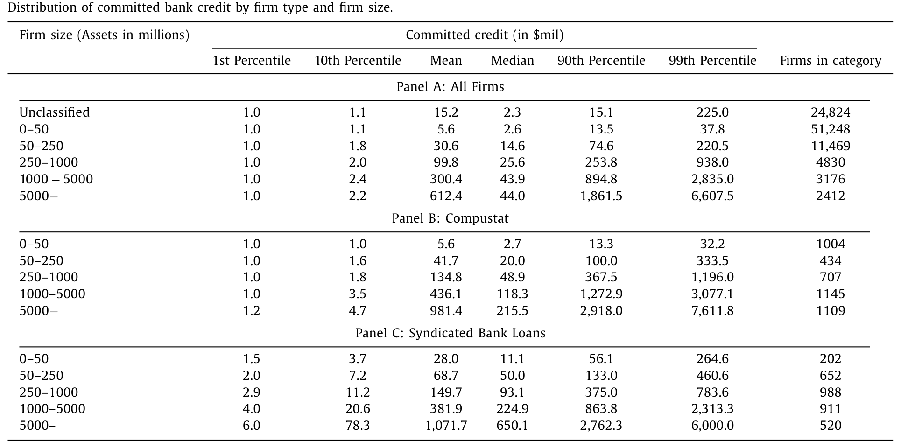
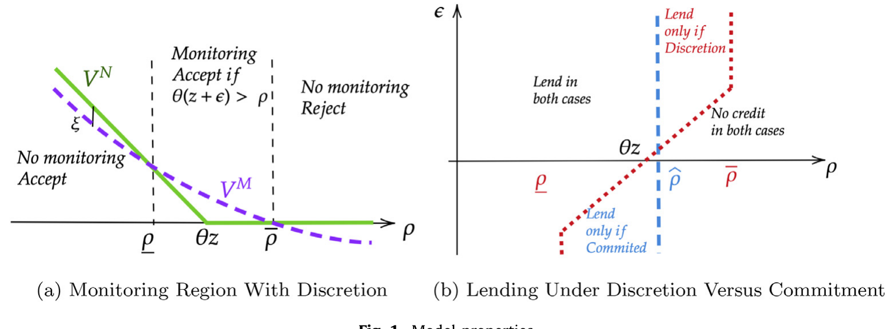
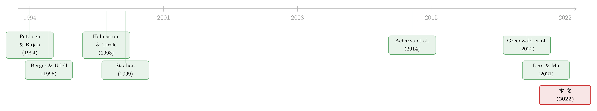

借得到，却用不上：当「承诺」和「相机抉择」把企业按规模分成两半
本文读的是 Chodorow-Reich, Darmouni, Luck & Plosser (2022, Journal of Financial Economics)：用覆盖全美 60% 公司贷款、含 5 万家中小企业的监管级数据，作者发现小企业拿到的授信「看起来」更糟——期限更短、抵押更多、动用率更高、利差更贵——但真正的故事不在「条款更差」，而在这些条款背后是一种给了银行「相机抉择权」的合约。于是当 COVID 冲击袭来、所有人都想提款时，大企业在已承诺的额度上痛快地把钱抽走（行业敞口每升 1 个标准差，提款率多 9 个百分点），小企业却几乎没有净提款。借得到，却用不上。
1 一个「人人都知道、却没人量过」的事实
危机来临，最怕的是借不到钱。银行作为流动性的提供者，本该在坏天气里替企业撑住现金流（Kashyap et al., 2002；Gatev and Strahan, 2006）。可是 2020 年春天，舆论里有一种挥之不去的担忧：站在企业规模分布顶端的大公司能轻松地把信贷额度抽干，而真正脆弱的小企业——更依赖银行、更不透明、风险更高（Petersen and Rajan, 1994；Berger and Udell, 1995；Gertler and Gilchrist, 1994）——很可能在最需要钱的时候，反而拿不到钱。
这种担忧听上去理所当然。可问题在于：它几乎从来没有被严肃地量过。 原因很现实——美国关于贷款条款的实证证据，绝大多数来自辛迪加贷款 (syndicated loan) 数据，而那个市场天然只服务大借款人、大额贷款。小企业在这类数据里几乎是隐形的。于是「小企业在危机里到底能不能动用授信」这个问题，长期停留在直觉层面。
本文做的第一件事，就是把这个隐形的世界照亮。作者用的是美联储的 FR Y-14Q 监管数据——所有总资产超过 $100 亿美元的银行控股公司，必须上报每一笔承诺额在 $100 万美元以上的贷款的细节：类型、承诺额、动用额、利率、起息日、到期日、抵押类型，外加借款人的行业、资产、内部评级、财务报表。最终样本是 29 家大银行、$2.77 万亿美元的公司贷款承诺，约占整个 Y-9C 口径的 60%，里面有 51,248 家总资产不足 $5000 万的「小小企业 (small SMEs)」。

Table 1
这是一个关键的数据优势：辛迪加数据里，即便是同一规模档的企业，大额贷款也更可能被辛迪加化，于是样本天然偏向大额、大户。Y-14 里小小企业的中位承诺额只有 $260 万美元，而资产超 $50 亿的企业，中位承诺额是 $4400 万美元——差了一个数量级。用辛迪加数据去外推小企业的贷款条款，等于拿巨人的鞋去量孩子的脚。
2 四个事实：小企业的授信「看起来」更糟
照亮之后，作者把跨规模分布的差异浓缩成四个事实。请先记住它们「表面」的样子，因为本文最精彩的反转，恰恰是要告诉你这四个事实其实是同一件事的四个侧面。
事实一：期限。 在资产不足 $5000 万的企业里，30% 的授信是活期贷款 (demand loan)——银行可以随时召回、立刻收回。这是「相机抉择」最纯粹的形态：它在定义上就不是承诺。更一般地，这些企业四分之三的贷款，起息时的期限在一年以内。而且小企业并不主动管理期限，于是任意一个月里，总有相当一批小企业的授信处在「可召回或即将到期」的状态——2019 年底，最小那档企业的存量授信里，超过 80% 要么立刻可召回、要么会在 2020 年内到期。相比之下，资产超 $10 亿的企业，一年以内期限的授信占比掉到 10% 以下，中位和众数都是五年期的循环额度；2019 年底只有 15% 的大企业授信剩余期限不足一年，中位贷款还剩约三年。
事实二：抵押。 小企业里，不足 5% 的授信是无抵押的；最典型的一笔小企业授信，由应收账款和存货 (accounts receivable and inventory, AR&I) 担保。无抵押的比例随规模单调上升——资产超 $50 亿的企业，70% 的授信是信用（无抵押）的。这里还藏着一个细节：小企业的定期贷款 (term loan) 里，一半由不动产抵押，而大企业更多用固定资产。这和 Lian and Ma (2021) 的发现互为补充——他们论证大企业以现金流为本 (cash-flow-based) 而非资产为本 (asset-based) 借贷；本文确认了这一点，同时指出对小企业而言，资产为本的抵押依旧是主流。
事实三：动用率。 正常时期，小企业的授信动用率 (utilization rate) 更高、也更不稳定。2019 年底，近五分之一的小小企业动用率超过 90%，三分之一超过 70%；而最大那档企业里，只有 7% 动用率超过 70%，四分之三的动用率低于 10%。注意这个对比意味着什么：小企业平时就把授信「用得很满」，说明在正常天气里，那些带相机抉择权的合约确实让它们随需取用。可一旦遇到自己的特异性困境（比如评级即将下调），小企业的动用率几乎不动，而大企业会在降级或违约前的几个季度明显加大动用。同一根杠杆，正常时给小企业放水，坏消息一来就拧紧。
事实四：定价。 尽管期限更短、流动性管理更被动、抵押更多——按理说这些都该压低利差——小企业仍然付更高的利差。行业、放贷行、企业财务、银行内部评级这些可观测变量，只能解释规模利差的大约三分之一。剩下三分之二去哪了？作者的解读是：小企业身上还带着「软信息」——比如财务报告质量——而正是这些软信息，让它们「自选」进了给银行相机抉择权的那类合约。
到这里，一个自然的问题浮出水面：这四个事实，到底是四个独立的现象，还是同一个深层机制的四张面孔？
3 一个核心：承诺 vs. 相机抉择
本文真正的「一个核心」，是一套不完全契约 (incomplete contracting) 视角下的信贷理论。作者把 Holmström and Tirole (1998) 关于流动性供给的经典模型做了一处关键扩展：允许借款人最终的可质押价值 (pledgeable value) 本身存在事前的不确定性。在这个框架里，贷款条款无非给了银行两种东西之一：
- 承诺 (commitment)：借款人总能按事前约定的额度提款。银行放弃了事后甄别的权利，换来的是一种保险——通过在高、低现金流状态间交叉补贴，把流动性冲击给「平滑」掉。
- 相机抉择 (discretion)：银行可以在事后拒绝提款请求，哪怕账面上流动性看起来是有的。它放弃了保险，换来一个期权——先监督、再决定是否放款，让放款与借款人的偿付前景挂钩。
两种合约都能放松信贷约束，只是走的是不同的渠道：承诺靠保险，相机抉择靠监督的期权价值。于是企业在均衡里会选择那个让「流动性驱动的违约」概率最小的合约。
3.1 把均衡逻辑写成一条选择规则
模型给出的比较静态非常干净，也正是全文的发动机。保险什么时候不值钱？当大额现金流冲击更可能发生时——因为冲击太大，交叉补贴撑不住。监督的期权什么时候更值钱？当事后监督的「选择权价值」更大、也就是借款人最终可质押价值越不确定时。把这两句话压成一条选择规则：
这条规则不是凭空设的符号游戏。它直接翻译成一句可检验的话：可质押价值「相对于预期冲击更小、且事前更不确定」的企业，会自选进相机抉择型合约。 而谁的可质押价值更小、更不确定？正是更小、更不透明、波动更高、财报更少被审计的企业。
于是模型预测：小企业更可能落到「相机抉择」那一侧。作者也确实在数据里印证了前提——更小的企业波动更高、财务报表更少经过外部审计。第 2 节那四个事实，至此被一根线串了起来：短期限、活期贷款、重抵押，全都是「给银行相机抉择权」的合约工具；高动用率，是这种合约在正常时让小企业随取随用的表现；而更高的利差，则是这些企业身上那些「让它们自选进相机抉择」的软信息特征的价格。四个事实，一个机制。

Figure 1: Model properties
4 识别：用 COVID 把「承诺」和「相机抉择」掰开看
理论说得再漂亮，也得有一个能把两类合约「事后」区分开的实验。COVID 衰退提供了这样一个时刻：一个几乎同时砸向所有企业的现金流冲击，而银行体系当时并不缺钱（恰恰相反，2020 年春天银行被流动性「淹没」）。如果小企业拿到的真是「保险」（承诺），那它们该和大企业一样痛快提款；如果拿到的是「相机抉择」，那银行就能在事后把它们挡在门外。
第一步，看总量。 2020 年一季度公司贷款 (C&I) 余额猛增，作者拆开发现：这个增量几乎全部来自大企业在既有授信上的提款；小企业的授信没有净提款。这一点 Li et al. (2020) 曾做出推测，Greenwald et al. (2020) 在独立且同期的工作中也有记录，本文把它做实并放到规模分布上。
第二步，剥离需求。 最大的识别威胁是:大企业会不会只是因为受到了更大的现金流冲击才提得多？作者用双重差分 (difference-in-differences, DiD) 框架，把企业规模档分别与一串控制变量（放贷行、借款人行业、所在州、杠杆、盈利、评级、现金持有、是否有债券市场准入）和「2020 年一季度后」的指示变量交互。结论稳健：即便层层控制，大企业的提款率依然更高。尤其是「现金持有」「债券市场准入」这两个控制很要紧——它们排除了「大企业是因为债市在 2020 年 3 月动荡、才转而动用授信」这一替代解释（关于债市动荡，见 Haddad et al., 2020）。
第三步，也是真正关键的一步——比较「提款对现金流冲击的敏感度」如何随规模变化。作者的主测度是企业所在三位数行业 2019Q2→2020Q2 的全国就业变化，减去过去五年的趋势变化。这个测度和健康风险对得很齐：就业下滑最猛的五个行业全都高度依赖面对面接触——观光交通、影音录制、表演艺术与观赏性体育、服装零售、博彩。结果是一个漂亮的反转：
在资产超
$10亿的企业里，行业敞口每升高 1 个标准差，提款率上升约9个百分点；而在资产不足$5000万的企业里，行业敞口对提款率的影响是一个被精确估计为接近零的数。
换句话说：大企业能让提款随冲击「响应」，小企业不能。作者还用「行业对物理临近性的要求」作为就业下滑的排除性工具变量 (instrumental variable, IV) 做了稳健性检验，结论一致。更妙的是——一旦把贷款期限和抵押类型（与 post 指示变量交互）加进去，规模梯度会缩小。这正是机制的指纹：是那些给银行相机抉择权的条款本身，限制住了小企业动用授信的能力。
5 PPP：政府能替银行兑现那份没兑现的保险吗？
故事到这里其实已经讲完了核心：小企业不是不想借，是合约让银行能把它们挡在外面。但本文还追了一步，去看政府的薪资保护计划 (Paycheck Protection Program, PPP) 有没有补上这个缺口。PPP 给雇员少于 500 人（或满足其他条件）的企业最多 $1000 万美元的贷款，且只要企业把合格支出维持在门槛之上，贷款可被豁免。作者用字符串匹配把 PPP 参与者名单并入 Y-14。
结果干净利落：拿到 PPP 资金的小企业，在 2020 年二季度把自己的非 PPP 银行借款净减少了——减少的量约等于 PPP 资金的 80%。这说明 PPP 不仅补上了那道流动性缺口，甚至完全盖过了它，只不过代价落在政府账上。（关于 PPP 钱到底有没有打到该打的地方，可参见《半万亿美元，砸出了多少个工作？》；关于政府担保如何重排了银行的信贷与风险，可参见《一块钱的担保，换走了多少自己的风险？》。）
6 文献脉络
把这篇论文放进它的家谱里，能更清楚地看到它站在哪。最上游是两条线的交汇。一条是关系型贷款与小企业不透明性：Petersen and Rajan (1994) 与 Berger and Udell (1995) 用小企业调查数据，揭示关系强度如何影响信贷的量与价；Gertler and Gilchrist (1994) 则把小企业的信贷约束放进宏观周期。另一条是流动性供给的契约理论：Holmström and Tirole (1998) 给出了私人与公共流动性供给的经典框架——也正是本文模型的母体。

往下，Strahan (1999) 在辛迪加市场里早早记录了「规模越小，期限越短、抵押越多、利差越高」的格局；本文的贡献，是把这套规律延伸到一个包含远小于辛迪加门槛的企业的样本里，并发现这些差异在更小的企业身上更为尖锐。在「信贷额度到底是不是真·或有信贷」这场辩论里（Sufi, 2009；Acharya et al., 2014 把信贷额度刻画为「被监督的流动性保险」），本文给出的回答是：对小借款人而言，在 COVID 这样的坏天气里，它们格外容易被挡在自己的授信门外——这与「正常时期」的用法形成鲜明对照（Brown et al., 2021）。
最后，在 COVID 这条时间线上，Li et al. (2020)、Acharya and Steffen (2020)、Greenwald et al. (2020) 记录了「增量几乎全来自大企业提款」这一事实。本文与它们的分野在于：那些工作多强调银行健康、债市替代；本文则把镜头对准金融契约的不完全性本身，论证即便银行不缺钱、即便不存在债市替代，小企业依旧借不到——这是一个互补的、被忽视的渠道。一句话点题：理解流动性如何在企业规模分布上流动，光靠简单的「供给/需求」二分是不够的，得回到契约的不完全。
7 评论与延伸（Q&A + 研究方向）
(a) 几个可能的疑问
Q：小企业借不到，难道不只是因为它们风险更高、银行不愿借吗？这和「相机抉择」有什么区别？
区别在于「事前 vs. 事后」。如果只是风险高，银行会在事前少给额度、定高价——这在四个事实里也确实存在。但本文的核心证据是事后：在已经签好的授信额度上，当冲击来临、银行体系不缺钱时，小企业依然提不出钱，且提款对冲击的敏感度被精确估计为接近零。这不是「事前额度小」，而是「事后银行行使了拒绝权」。相机抉择，强调的正是这份事后的、写进条款里的拒绝权。
Q：把「期限、抵押」加进回归后规模梯度缩小，会不会只是这些条款和别的东西相关、属于伪相关？
有这个风险，作者自己也很诚实地称之为「旁证 (circumstantial evidence)」。但它和模型预测的方向高度一致：如果限制小企业动用的真是合约条款，那么控制住条款后，规模本身的解释力就该下降。它不是孤证——和「四个事实指向同一机制」「IV 结果一致」「PPP 能补缺口」一起，构成一条互相印证的证据链。
Q：用全国行业就业变化当现金流冲击，会不会太粗、测不准单个企业受到的冲击？
测度确实粗，但作者做了两件事来背书：一是用 Compustat 子样本确认这个测度和企业营收变化强相关；二是用「行业对物理临近的依赖度」作为就业下滑的工具变量。粗测度的好处是它对所有企业都可得、且与需求/健康风险挂钩；坏处是它抹掉了企业内部的异质性——这会让敏感度的估计偏保守，反而强化了「小企业敏感度≈0」这个结论。
Q：小企业平时动用率那么高（三分之一超 70%），那它们在 COVID 里「没有净提款」，会不会只是因为额度本来就快用满了，没空间提了？
这是个好问题，也是本文需要正面回应的张力。作者的回答藏在「敏感度」检验里：即便在有剩余额度的小企业里，提款对行业冲击的响应也接近零。也就是说，不是没空间，而是空间在坏消息来时被银行的相机抉择权「冻」住了。高动用率本身恰恰是相机抉择合约在正常时的产物——平时随取随用，所以用得满。
Q：PPP 让小企业「净减少」非 PPP 借款 80%，是不是说明 PPP 其实是在替银行省钱、挤出了本该由银行提供的信贷？
从会计上看确实是「挤出」：政府的钱进来，银行的钱退出，缺口被填上还有富余。本文的措辞很克制——PPP「完全盖过了缺口，但代价落在政府账上」。它没有去评判 PPP 的整体福利（那是 Granja et al., 2020 等专门处理的问题），只是指出：当私人合约让银行能拒绝放款时，政府提供的流动性确实能绕过这道约束。
Q：这套「承诺 vs. 相机抉择」的逻辑，是美国特有的，还是普适的？
模型是普适的，但实证依赖美国的市场结构。作者特意指出，很多国家有信贷登记 (credit registry) 便于研究小企业贷款条款（Jiménez et al., 2009 等），但各国银行市场差异极大，条款的具体形态（活期贷款的普遍程度、AR&I 抵押的主导地位）未必能照搬。这恰恰给跨国比较留了口子。
(b) 几个可能的研究问题与提案
1. 把「承诺 vs. 相机抉择」搬到公司债市场。 【经济故事】债券是典型的「承诺」工具——一旦发行，持有人不能像银行那样事后拒绝兑付。那么当一家企业同时有银行授信和债券时，坏天气里它会优先动用哪一边？相机抉择的银行额度被冻住时，债券的「硬承诺」是否成了大企业独享的避险资产？这能把本文的规模梯度延伸到「融资工具的契约硬度」这一维度。 【可行性】中。需要把 Y-14（或 Dealscan）与 Mergent FISD 债券数据按企业匹配，识别可借 COVID 或某次评级冲击做事件研究。难点在于有债券的小企业极少——本文的样本里恰恰强调了「无债券企业也大量提款」，所以样本可能偏向中大型企业。
2. 外资银行 vs. 本土银行的「相机抉择」差异。 【经济故事】外资银行对本地小企业的软信息更少，按本文逻辑，它们应当更依赖相机抉择型条款（更短期限、更多抵押）。若一家小企业的关系行是外资分支，它在危机里被「冻住」的概率是否更高？这把契约视角和「关系型 vs. 交易型放贷」接上了。 【可行性】中。Y-14 含放贷行身份，可区分外资中间控股公司；识别上可用「企业所在地外资银行渗透率」的外生变化。难点是外资银行在小企业市场份额本就小，功效 (power) 可能不足。
3. 流动性指标能否「预读」哪些企业会被冻住。 【经济故事】既然提款能力取决于合约的相机抉择程度，那么在冲击发生之前，能否用授信的可观测条款（活期占比、剩余期限、抵押类型）构造一个「流动性脆弱度」指标，预测企业在下一次冲击中的提款缺口？这对宏观审慎监管直接有用。 【可行性】高。所有原料都在 Y-14 里，是一个纯预测性练习；可用 2020 这次冲击做样本内拟合，再留待下一次冲击做样本外验证。识别要求低，主要是测度构造与稳健性。
4. 抵押品价值波动如何放大「相机抉择」的咬合。 【经济故事】本文提到小企业提款对抵押品价值更敏感。当抵押品（AR&I、不动产）本身在危机里贬值时，相机抉择的银行更有理由拒绝放款——这会形成「抵押品贬值 → 拒绝放款 → 企业困境 → 抵押品进一步贬值」的螺旋。能否把抵押品价格冲击与提款缺口直接对上？ 【可行性】中。需要按抵押类型匹配区域不动产或行业应收账款质量的价格序列；Y-14 对约 5.7% 的设施报告抵押品市值，可作为子样本验证。难点是抵押品市值数据覆盖太薄。
5. 「软信息」到底是哪一种？把审计与财报质量量化进利差。 【经济故事】本文说规模利差有三分之二无法被可观测变量解释，归因于「软信息」。但软信息是个黑箱。能否用「财报是否经外部审计」「财报更新频率」等 Y-14 里真实存在的字段，把这块黑箱拆开，看它能解释多少剩余利差？这是对「自选进相机抉择合约」这一机制的直接检验。 【可行性】高。Y-14 报告了是否经外部审计、财务变量更新频率，都是现成字段；可在事实四的定价回归上逐步加入这些代理变量，看规模梯度还能再被吃掉多少。
8 我的判断与参考文献
贡献。 这篇论文最扎实的地方，是用一个别人看不到的数据集，把「小企业在危机里借不到钱」从一句直觉，变成了一条有机制、有量级、能被证伪的因果叙事。它的优雅在于「四个事实，一个机制」——把期限、抵押、动用率、利差这四张看似各自为政的牌，用「承诺 vs. 相机抉择」这一根线串成了同一个故事，再用 COVID 这个近乎天然的实验把这根线绷紧。9 个百分点 vs. 接近零的敏感度对比，是全文最有说服力的一击。
对识别的担忧。 我有两点保留。其一，现金流冲击的测度终究是行业层面的，企业内部的真实冲击异质性被抹掉了；虽然这大概率让结论偏保守，但它也意味着「小企业敏感度≈0」里可能混入了「测不准」的成分，而非纯粹的「被冻住」。其二，「加入条款后规模梯度缩小」是相关性证据而非随机化证据——条款是企业自选的，自选本身就和那些决定提款能力的不可观测特征相关，所以这一步更像是「与机制一致」，而非「机制的因果证明」。作者对此是诚实的。
后续想看。 我最想看到的，是把这套契约视角接到信用市场和外资持有人上：当银行的相机抉择权在坏天气里把小企业挡在门外时，是谁——直接放贷机构、债券持有人、还是政府——接住了这批被冻住的需求，又是以什么价格接住的？（关于银行撤退后谁来补位，可参见《银行撤退之后，是谁悄悄接住了那批「借不到钱」的公司？》。）这关乎一个更大的问题：当私人合约系统性地在危机里失灵于分布的一端时，流动性最终从哪条管道补回来——而那条管道的定价，才是政策真正该盯住的地方。
参考文献
- Acharya, V. V., Almeida, H., Ippolito, F., Perez, A. (2014). Credit lines as monitored liquidity insurance: theory and evidence. Journal of Financial Economics 112(3), 287–319.
- Acharya, V. V., Steffen, S. (2020). The risk of being a fallen angel and the corporate dash for cash in the midst of COVID. Review of Corporate Finance Studies, forthcoming.
- Berger, A. N., Udell, G. F. (1995). Relationship lending and lines of credit in small firm finance. Journal of Business 68(3), 351–381.
- Brown, J. R., Gustafson, M., Ivanov, I. (2021). Weathering cash flow shocks. Journal of Finance 76(4), 1731–1772.
- Chodorow-Reich, G. (2014). The employment effects of credit market disruptions: firm-level evidence from the 2008–9 financial crisis. Quarterly Journal of Economics 129(1), 1–59.
- Gatev, E., Strahan, P. E. (2006). Banks' advantage in hedging liquidity risk: theory and evidence from the commercial paper market. Journal of Finance 61(2), 867–892.
- Gertler, M., Gilchrist, S. (1994). Monetary policy, business cycles, and the behavior of small manufacturing firms. Quarterly Journal of Economics 109(2), 309–340.
- Holmström, B., Tirole, J. (1998). Private and public supply of liquidity. Journal of Political Economy 106(1), 1–40.
- Kashyap, A. K., Rajan, R., Stein, J. C. (2002). Banks as liquidity providers: an explanation for the coexistence of lending and deposit-taking. Journal of Finance 57(1), 33–73.
- Petersen, M. A., Rajan, R. G. (1994). The benefits of lending relationships: evidence from small business data. Journal of Finance 49(1), 3–37.
- Sufi, A. (2009). Bank lines of credit in corporate finance: an empirical analysis. Review of Financial Studies 22(3), 1057–1088.